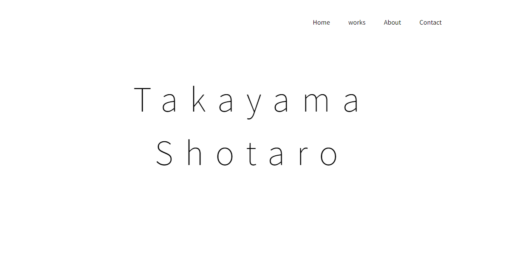

Takayama
Shotaro
はじめまして。「たかやましょうたろう」と申します。
ご依頼いただいた皆様の想いをコーディングを通じて見える化しフィードバックを繰り返し、想像以上のクリエイティブをお届けする。
この信念のもと、皆様のクリエイティブをお手伝いさせて頂きます。
Service
-


HTML&CSS
コーディングが得意なので、デザインカンプに則ってwebサイトへ忠実に変換出来ます。
sassを用いたコーディングで、スマートフォン向けデザイン(レスポンシブデザイン)の制作時間を効率化し、正確にコーディングする事が得意です。 -
jQuery
javascript(jQuery)を用いた、動きのあるデザインが得意です。
jQueryの基礎構造から勉強した為、動きのある応用デザインにカスタマイズしたコーディングが可能です。 -

Figma(design)
サイト設計からデザイン制作まで行うことが可能です。
サイト設計では世にあるサイトをモデリングサイトとして、お客様が抱えている課題や、ユーザビリティに即したフレームワークサイトデザインの提案に努めます。
Works
-

龍泉寺の湯(自作サイト)
-

My portforio(自作サイト)
About
運転と友達との会話が大好きな愛知県出身在住の24歳。
WebITに興味を持ち独学でウェブデザイナーの勉強を開始。
現在では知り合いのプログラミング教育事業にて、コーディング担当としてお手伝い中。
webコーディング教育事業を展開する事、Webディレクターになる事を目標に案件実績の獲得に精進しております。
Contact
お仕事のご相談やご質問など、お気軽にご連絡ください。
こちらのお問い合わせボタンより、メーラーが起動しますので
こちらからご連絡下さい。